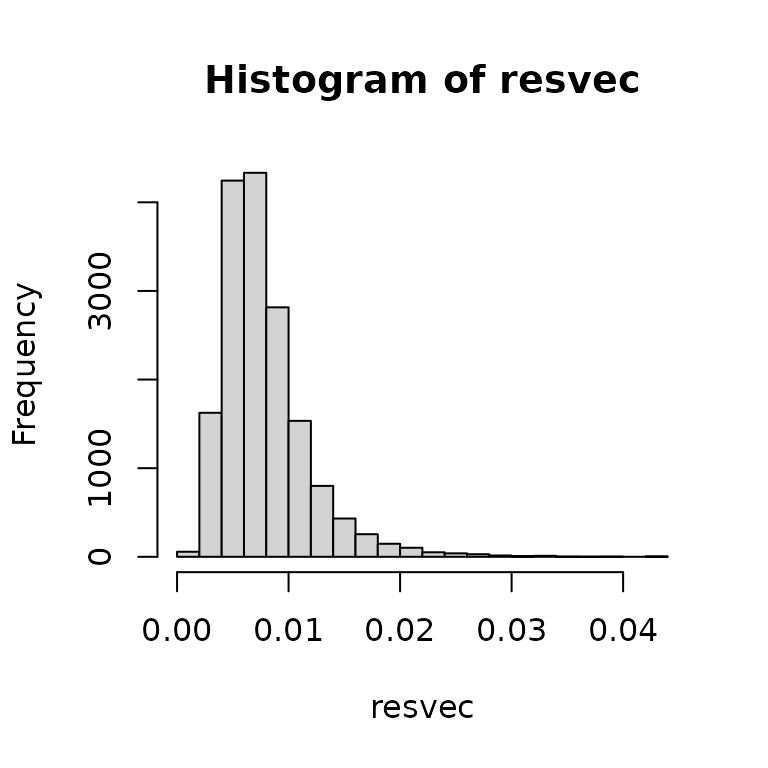
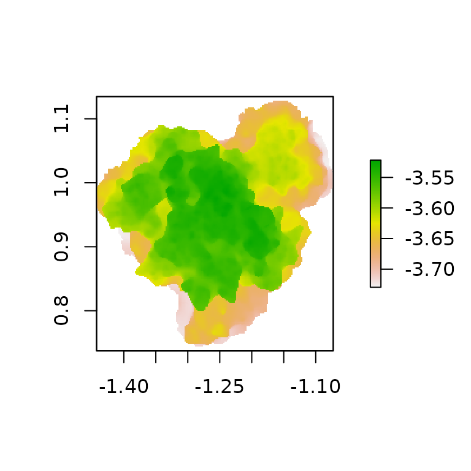

Checking your mesh
habtools includes a wide range of 3D metrics applicable
to meshes.
Before calculating any metrics, visualize your mesh and make sure that the z orientation is correct, as this may affect some of the calculations.
plot3d(mcap)
Depending on how the mesh was generated (e.g. with the use of a laser scanner), the resolutions (distance between vertices inside the mesh) can vary a lot. This may affect calculations such as fractal dimension. Check the distribution of resolution of your object and if needed, remesh to make the resolution more uniform.
resvec <- Rvcg::vcgMeshres(mcap)[[2]] # vector of resolutions
hist(resvec)
summary(resvec)
#> Min. 1st Qu. Median Mean 3rd Qu. Max.
#> 0.001307 0.005265 0.007003 0.007831 0.009410 0.043981In our example, the mcap object has very variable
distances between vertices. We can solve this issue by re-meshing the
object with the Rvcg function vgcUniformRemesh(). Here we
set the resolution (voxelSize) to the minimum distance between points in
the original mesh to ensure we don’t loose details. This choice may be
made on a case-to-case basis. Setting multisample=TRUE
improves the accuracy of distance field computation, but slows down the
calculation so this choice may be defined by computing power and the
size of your object. The re-meshed object now has a mean resolution of
approximately the minimum of resvec. While there will still
be some variation in the obtained distances between vertices, the
variation will be much smaller. An alternative option would be to
re-mesh using an external 3D software such as blender.
mcap_uniform <- Rvcg::vcgUniformRemesh(mcap, silent = TRUE, multiSample = TRUE, voxelSize = min(resvec), mergeClost = TRUE)
Rvcg::vcgMeshres(mcap_uniform)[[1]]
#> [1] 0.001328214
summary(Rvcg::vcgMeshres(mcap_uniform)[[2]])
#> Min. 1st Qu. Median Mean 3rd Qu. Max.
#> 0.0003464 0.0010450 0.0013561 0.0013282 0.0016327 0.0026663Complexity metrics: R, D, and H
The three main metrics for DEMs also work for meshes. The recommended
method for fractal dimension is cubes.
# fractal dimension
fd(mcap_uniform, method = "cubes", plot = TRUE, diagnose = TRUE)
#> lvec is set to c(0.003, 0.006, 0.012, 0.024, 0.048, 0.096, 0.192, 0.385).
#> $D
#> [1] 2.134741
#>
#> $data
#> l n
#> 8 0.003006817 38169
#> 7 0.006013634 10463
#> 6 0.012027269 2715
#> 5 0.024054537 673
#> 4 0.048109075 162
#> 3 0.096218149 34
#> 2 0.192436298 8
#> 1 0.384872597 1
#>
#> $lvec
#> [1] 0.384872597 0.192436298 0.096218149 0.048109075 0.024054537 0.012027269
#> [7] 0.006013634 0.003006817
#>
#> $D_vec
#> [1] 1.867105 1.946272 2.012274 2.054613 2.252387 2.087463 3.000000
#>
#> $var
#> [1] 0.3834844
#>
#> $method
#> [1] "cubes"Rugosity
# rugosity
rg(mcap_uniform)
#> L0 is set to mesh resolution (0.00132821395068341)
#> [1] 3.145419
# height range
hr(mcap_uniform)
#> [1] 0.2204218For fractal dimension, two methods are available: cubes
and area. In the cubes method, fractal
dimension is calculated as the slope of
,
where n is the total number of cubes that contains any
surface of the object and l is the size of the cubes
(elements of lvec). In the area method, the
mesh is re-meshed at varying resolutions (lvec). Further,
you can calculate planar and total surface area of the object.
planar(mcap)
#> L0 is set to mesh resolution (0.00783124724167033)
#> [1] 0.08368526
surface_area(mcap)
#> [1] 0.2698101Shape Metrics
There are a number of other metrics that tell you more about the shape of the object. See Zawada et al. (2019) for an example of an application of these metrics on corals.
-
Convexity: the ratio of the volume of the object
and the volume of the convex hull around the object.
-
Packing: The ratio of the surface area of the
object and the surface area of the convex hull around the object.
-
Sphericity: The ratio of the surface area of a
sphere with the same volume as the object and the surface area of the
object.
-
Second moment of area (
sma): A measure of top-heaviness using area. Calculated by multiplying the surface area of each triangle in the mesh by its vertical distance from the origin.
-
Second moment of volume (
smv): A measure of top-heaviness using volume. For each triangle in the mesh, a tetrahedron between the triangle and the origin was calculated. The signed volume of each tetrahedron was multiplied by the vertical distance between the centroid of the tetrahedron and the centroid of the attachment plane.
-
Mechanical shape factor (
csf): Mechanical vulnerability of a structural element (Madin & Connolly, 2006).
# convexity
convexity(mcap)
#> [1] 0.4484716
# packing
packing(mcap)
#> [1] 0.8642852
# sphericity
sphericity(mcap)
#> [1] 0.6056971
# second moment of area
sma(mcap)
#> [1] 0.03294466
# second moment of volume
smv(mcap)
#> [1] 0.0005450781
# mechanical shape factor
csf(mcap)
#> z_min set to -3.74007153511047
#> resolution set to 0.00783124724167033
#> [1] 1816.815Transform mesh into a DEM or 2D shape
You can also transform a 3D mesh to a DEM, and then apply DEM functions to the surface.
dem <- mesh_to_dem(mcap_uniform, res = 0.002, fill = FALSE)
raster::plot(dem)
rg(dem, method = "area")
#> [1] 2.767167You can also transform a 3D mesh to a 2D drawing, and then apply 2D functions to the object. Note that fractal dimension ranges between 1 and 2 for 2D drawings, rather than 2 and 3 for 3D meshes.
pts <- mesh_to_2d(mcap_uniform)
plot(pts, asp=1)
# perimeter
perimeter(pts)
#> [1] 1.705922
# circularity
circularity(pts)
#> [1] 0.6123799
# fractal dimension
fd(pts, method = "boxes", keep_data = FALSE, plot = TRUE)
#> [1] 1.216126